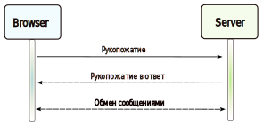

<section>
    <div id="about_integrations">
        <div>
            <h3>Способы интеграции систем</h3>
            <hr />
        </div>
        <div>
            <hr />
            <h3>Файловый обмен</h3>
            <hr />
        </div>
        <div>
            <hr />
            <h3>Брокеры сообщений</h3>
            <hr />
            <div>
                <h3>Брокеры сообщений</h3>
                <p>Брокер сообщений — это программное обеспечение, которое позволяет приложениям, системам и службам
                    взаимодействовать друг с другом и обмениваться информацией. Брокер сообщений делает это, переводя
                    сообщения между формальными протоколами обмена сообщениями. Это позволяет взаимозависимым службам
                    _"разговаривать"_ друг с другом напрямую, даже если они написаны на разных языках или реализованы на
                    разных платформах.
                <p>Брокеры сообщений могут проверять, хранить, маршрутизировать и доставлять сообщения в соответствующие
                    пункты назначения. Они служат посредниками между другими приложениями, позволяя отправителям отправлять
                    сообщения, не зная, где находятся получатели, активны они или нет и сколько их. Это облегчает разделение
                    процессов и служб внутри систем.
                <div>
                    <h4>Модели</h4>
                    <p>Брокеры сообщений предлагают два основных шаблона или стиля рассылки сообщений:
                    <ul>
                        <li>Обмен сообщениями «точка-точка»: это шаблон распределения, используемый в очередях сообщений с
                            отношением «один к одному» между отправителем и получателем сообщения.</li>
                        <li>Обмен сообщениями с публикацией и подпиской - в этом шаблоне рассылки сообщений, часто называемом _"pub/sub"_, производитель каждого сообщения
                            публикует его в теме, а несколько потребителей сообщений подписываются на темы, из которых они
                            хотят получать сообщения.</li>
                    </ul>
                    <p>Мы подробно обсудим эти шаблоны обмена сообщениями в последующих руководствах._
                </div>
                <div>
                    <h4>Брокеры сообщений и потоковая передача событий</h4>
                    <p>Брокеры сообщений могут поддерживать два или более шаблонов обмена сообщениями, включая очереди
                        сообщений и публикацию/подписку, в то время как платформы потоковой передачи событий предлагают
                        только шаблоны распространения в стиле публикации/подписки. Платформы потоковой передачи событий,
                        предназначенные для использования с большими объемами сообщений, легко масштабируются. Они способны
                        упорядочивать потоки записей по категориям, называемым _topics_, и хранить их в течение заранее
                        определенного периода времени. Однако, в отличие от брокеров сообщений, платформы потоковой передачи
                        событий не могут гарантировать доставку сообщений или отслеживать, какие потребители получили сообщения.
                    <p>Платформы потоковой передачи событий предлагают большую масштабируемость, чем брокеры сообщений, но
                        меньше функций, обеспечивающих отказоустойчивость, таких как повторная отправка сообщений, а также
                        более ограниченные возможности маршрутизации сообщений и организации очередей.
                </div>
                <div>
                    <h4>Брокеры сообщений и корпоративная служебная шина (ESB)</h4>
                    <p>Инфраструктура Enterprise Service Bus (ESB) сложна, ее сложно интегрировать и дорого поддерживать. Их
                        трудно устранять, когда возникают проблемы в производственных средах, их нелегко масштабировать, а
                        обновление утомительно.
                    <p>Принимая во внимание, что брокеры сообщений являются _"облегченной"_ альтернативой ESB, которые
                        обеспечивают аналогичную функциональность, механизм для межсервисного взаимодействия, но с меньшими
                        затратами. Они хорошо подходят для использования в [архитектурах микросервисов](https://karanpratapsingh.com/courses/system-design/monoliths-microservices#microservices),
                        которые стали более распространенными, поскольку ESB потеряли популярность.
                </div>
                <div>
                    <h4>Примеры</h4>
                    <p>Вот некоторые часто используемые брокеры сообщений:
                    <ul>
                        <li><a href="https://nats.io">НАТС</a></li>
                        <li><a href="https://kafka.apache.org">kafka apache</a></li>
                        <li><a href="https://www.rabbitmq.com">RabbitMQ</a></li>
                        <li><a href="https://activemq.apache.org">ActiveMQ</a></li>
                    </ul>
                </div>
            </div>
            <div>
                <h3>Очереди сообщений</h3>
                <p>Очередь сообщений — это форма связи между службами, которая упрощает асинхронную связь. Он асинхронно
                    получает сообщения от производителей и отправляет их потребителям.<br />
                    Очереди используются для эффективного управления запросами в крупномасштабных распределенных системах.
                    В небольших системах с минимальной вычислительной нагрузкой и небольшими базами данных запись может
                    выполняться предсказуемо быстро. Однако в более сложных и больших системах запись может занимать почти
                    недетерминированное количество времени.<br />
                <div>
                    <h4>Работающий</h4>
                    <p>Сообщения хранятся в очереди до тех пор, пока они не будут обработаны и удалены. Каждое сообщение
                        обрабатывается только один раз одним потребителем. Вот как это работает:</p>
                    <ul>
                        <li>Производитель публикует задание в очереди, а затем уведомляет пользователя о статусе задания.</li>
                        <li>Потребитель берет задание из очереди, обрабатывает его, а затем сигнализирует о завершении задания.</li>
                    </ul>
                </div>
                <div>
                    <h4>Преимущества</h4>
                    <p>Давайте обсудим некоторые преимущества использования очереди сообщений:</p>
                    <ul>
                        <li><strong>Масштабируемость</strong>: очереди сообщений позволяют масштабировать именно там, где это
                            необходимо. Когда рабочие нагрузки достигают пика, несколько экземпляров нашего приложения могут
                            добавлять все запросы в очередь без риска коллизии.</li>
                        <li><strong>Развязка</strong>: очереди сообщений удаляют зависимости между компонентами и значительно
                            упрощают реализацию развязанных приложений.</li>
                        <li><strong>Производительность</strong>: очереди сообщений обеспечивают асинхронную связь, что
                            означает, что конечные точки, создающие и потребляющие сообщения, взаимодействуют с очередью, а
                            не друг с другом. Производители могут добавлять запросы в очередь, не дожидаясь их обработки.</li>
                        <li><strong>Надежность</strong>: очереди делают наши данные постоянными и уменьшают количество ошибок,
                            возникающих, когда разные части нашей системы отключаются.</li>
                    </ul>
                </div>
                <div>
                    <h4>Функции</h4>
                    <p>Теперь давайте обсудим некоторые желаемые функции очередей сообщений</p>
                    <h5>Push или Pull Доставка</h5>
                    <p>В большинстве очередей сообщений предусмотрены как push-, так и pull-опции для получения сообщений.
                        Pull означает непрерывный запрос очереди на наличие новых сообщений. Push означает, что потребитель
                        уведомляется, когда сообщение доступно. Мы также можем использовать длительный опрос, чтобы позволить
                        запросам ждать определенное количество времени для получения новых сообщений.</p>
                    <h5>Очереди FIFO (первым пришел — первым обслужен)</h5>
                    <p>В этих очередях самая старая (или первая) запись, иногда называемая «головой"_ очереди, обрабатывается
                        первой.</p>
                    <h5>Запланировать или отложить доставку</h5>
                    <p>Многие очереди сообщений поддерживают установку определенного времени доставки сообщения. Если нам
                        нужно иметь общую задержку для всех сообщений, мы можем настроить очередь задержки.</p>
                    <h5>Доставка по крайней мере один раз</h5>
                    <p>Очереди сообщений могут хранить несколько копий сообщений для избыточности и высокой доступности, а
                        также повторно отправлять сообщения в случае сбоев или ошибок связи, чтобы гарантировать, что они
                        будут доставлены хотя бы один раз.</p>
                    <h5>Однократная доставка</h5>
                    <p>Когда дубликаты недопустимы, очереди сообщений FIFO (первым пришел — первым обслужен) гарантируют, что
                        каждое сообщение будет доставлено ровно один раз (и только один раз), автоматически отфильтровывая
                        дубликаты.</p>
                    <h5>Очереди недоставленных сообщений</h5>
                    <p>Очередь недоставленных сообщений — это очередь, в которую другие очереди могут отправлять сообщения,
                        которые не могут быть успешно обработаны. Это позволяет легко отложить их для дальнейшей проверки, не
                        блокируя обработку очереди и не затрачивая циклы ЦП на сообщение, которое может никогда не быть успешно
                        обработано.</p>
                    <h5>Заказ</h5>
                    <p>Большинство очередей сообщений обеспечивают упорядочение по принципу «наилучшее из возможных», что
                        гарантирует, что сообщения обычно доставляются в том же порядке, в котором они были отправлены, и что
                        сообщение доставляется хотя бы один раз.</p>
                    <h5>Сообщения о ядовитых пилюлях</h5>
                    <p>Ядовитые пилюли — это специальные сообщения, которые можно получить, но нельзя обработать. Это механизм,
                        используемый для того, чтобы сигнализировать потребителю о завершении своей работы, чтобы он больше
                        не ждал новых входных данных, и аналогичен закрытию сокета в модели клиент/сервер.</p>
                    <h5>Безопасность</h5>
                    <p>Очереди сообщений будут аутентифицировать приложения, которые пытаются получить доступ к очереди, это
                        позволяет нам шифровать сообщения по сети, а также в самой очереди.</p>
                    <h5>Очереди задач</h5>
                    <p>Очереди задач получают задачи и связанные с ними данные, запускают их, а затем доставляют результаты.
                        Они могут поддерживать планирование и могут использоваться для выполнения ресурсоемких задач в фоновом
                        режиме.</p>
                </div>
                <div>
                    <h4>Обратное давление</h4>
                    <p>Если очереди начинают значительно расти, размер очереди может превысить размер памяти, что приведет к
                        промахам кэша, чтению с диска и даже снижению производительности. Обратное давление может помочь,
                        ограничивая размер очереди, тем самым поддерживая высокую пропускную способность и хорошее время
                        отклика для заданий, уже находящихся в очереди. Как только очередь заполняется, клиенты получают код
                        состояния «сервер занят» или HTTP 503, чтобы повторить попытку позже. Клиенты могут повторить запрос
                        позже, возможно, со стратегией [экспоненциальной отсрочки](https://en.wikipedia.org/wiki/Exponential_backoff).
                </div>
                <div>
                    <h4>Примеры</h4>
                    <p>Ниже приведены некоторые широко используемые очереди сообщений:</p>
                    <ul>
                        <li><a href="https://aws.amazon.com/sqs">Amazon SQS</a></li>
                        <li><a href="https://www.rabbitmq.com">RabbitMQ</a></li>
                        <li><a href="https://activemq.apache.org">ActiveMQ</a></li>
                        <li><a href="https://zeromq.org">ZeroMQ</a></li>
                    </ul>
                </div>
            </div>
            <div>
                <h3>Опубликовать-подписаться</h3>
                <p>Подобно очереди сообщений, публикация-подписка также является формой связи между службами, которая упрощает
                    асинхронную связь. В модели pub/sub любое сообщение, опубликованное в теме, немедленно отправляется всем
                    подписчикам этой темы.<br />
                    Подписчики темы сообщения часто выполняют разные функции, и каждый из них может параллельно делать что-то
                    свое с сообщением. Издателю не нужно знать, кто использует информацию, которую он транслирует, а
                    подписчикам не нужно знать, откуда приходит сообщение. Этот стиль обмена сообщениями немного отличается
                    от очередей сообщений, где компонент, отправляющий сообщение, часто знает адресата, которому оно
                    отправляется.</p><div>
                <div>
                    <h4>Работающий</h4>
                    <p>В отличие от очередей сообщений, которые группируют сообщения до тех пор, пока они не будут
                        получены, темы сообщений передают сообщения практически без очередей и немедленно рассылают их
                        всем подписчикам. Вот как это работает:</p>
                    <ul>
                        <li>Тема сообщения предоставляет упрощенный механизм для широковещательной рассылки уведомлений
                            об асинхронных событиях и конечных точек, которые позволяют программным компонентам
                            подключаться к теме для отправки и получения этих сообщений.</li>
                        <li>Чтобы передать сообщение, компонент, называемый <em>publisher</em>, просто отправляет
                            сообщение в тему.</li>
                        <li>Все компоненты, которые подписываются на тему (известные как <em>subscribers</em>), будут
                            получать каждое переданное сообщение.</li>
                    </ul>
                </div>
            </div>
                <div>
                    <h4>Преимущества</h4>
                    <p>Давайте обсудим некоторые преимущества использования публикации-подписки:</p>
                    <ul>
                        <li><strong>Устранение опроса</strong>: Темы сообщений обеспечивают мгновенную доставку на основе
                            push-уведомлений, что избавляет потребителей сообщений от необходимости периодически проверять
                            или <em>«опрашивать»</em> новую информацию и обновления. Это способствует более быстрому времени
                            отклика и уменьшает задержку доставки, которая может быть особенно проблематичной в системах, где
                            задержки недопустимы.</li>
                        <li><strong>Динамический таргетинг</strong>: Pub/Sub делает поиск сервисов более простым, естественным
                            и менее подверженным ошибкам. Вместо того, чтобы поддерживать список одноранговых узлов, которым
                            приложение может отправлять сообщения, издатель просто публикует сообщения в теме. Затем любая
                            заинтересованная сторона подпишет свою конечную точку на тему и начнет получать эти сообщения.
                            Подписчики могут изменяться, обновляться, увеличиваться или исчезать, а система динамически
                            настраивается.</li>
                        <li><strong>Отдельное и независимое масштабирование</strong>: издатели и подписчики не связаны и
                            работают независимо друг от друга, что позволяет нам разрабатывать и масштабировать их независимо
                            друг от друга.</li>
                        <li><strong>Упрощение связи</strong>: модель «публикация-подписка» снижает сложность за счет удаления
                            всех соединений «точка-точка» с одним соединением с темой сообщения, которое будет управлять
                            подписками и решать, какие сообщения должны быть доставлены в какие конечные точки.</li>
                    </ul></div>
                <div>
                    <h4>Функции</h4>
                    <p>Теперь давайте обсудим некоторые желаемые функции публикации-подписки:</p>
                    <h5>Пуш-доставка</h5>
                    <p>Обмен сообщениями Pub/Sub мгновенно отправляет асинхронные уведомления о событиях, когда сообщения
                        публикуются в теме сообщения. Подписчики уведомляются, когда сообщение доступно.</p>
                    <h5>Несколько протоколов доставки</h5>
                    <p>В модели публикации-подписки темы обычно могут подключаться к нескольким типам конечных точек, таким
                        как очереди сообщений, бессерверные функции, HTTP-серверы и т. д.</p>
                    <h5>Разветвление</h5>
                    <p>Этот сценарий происходит, когда сообщение отправляется в тему, а затем реплицируется и отправляется на
                        несколько конечных точек. Fanout предоставляет асинхронные уведомления о событиях, которые, в свою
                        очередь, позволяют выполнять параллельную обработку.</p>
                    <h5>Фильтрация</h5>
                    <p>Эта функция позволяет подписчику создать политику фильтрации сообщений, чтобы получать только
                        интересующие его уведомления, а не получать каждое сообщение, опубликованное в теме.</p>
                    <h5>Долговечность</h5>
                    <p>Службы обмена сообщениями Pub/Sub часто обеспечивают очень высокую надежность и по крайней мере
                        однократную доставку за счет хранения копий одного и того же сообщения на нескольких серверах.</p>
                    <h5>Безопасность</h5>
                    <p>Темы сообщений аутентифицируют приложения, которые пытаются опубликовать контент, это позволяет нам
                        использовать зашифрованные конечные точки и шифровать сообщения при передаче по сети.</p>
                </div>
                <div>
                    <h4>Примеры</h4>
                    <p>Вот некоторые часто используемые технологии публикации-подписки:</p>
                    <ul>
                        <li><a href="https://aws.amazon.com/sns">Amazon SNS</a></li>
                        <li><a href="https://cloud.google.com/pubsub">Google Pub/Sub</a></li>
                    </ul>
                </div>
            </div>
            <div>
              <h4>Kafka</h4>
            </div>
            <div>
                <h4>RabbitMQ</h4>
            </div>
        </div>
        <div>
            <hr />
            <h3>Корпоративная служебная шина (ESB)</h3>
            <hr />
            <div>
                <h3>Корпоративная служебная шина (ESB)</h3>
                <p>Корпоративная служебная шина (ESB) — это архитектурный шаблон, в котором централизованный программный
                    компонент выполняет интеграцию между приложениями. Он выполняет преобразования моделей данных, управляет
                    подключением, выполняет маршрутизацию сообщений, преобразует протоколы связи и, возможно, управляет
                    составом нескольких запросов. ESB может сделать эти интеграции и преобразования доступными в качестве
                    сервисного интерфейса для повторного использования новыми приложениями.<br />
                <div>
                    <h4>Преимущества и недостатки</h4>
                    <p>Теоретически централизованная ESB предлагает потенциал для стандартизации и значительного упрощения
                        связи, обмена сообщениями и интеграции между службами на предприятии. Вот некоторые преимущества
                        использования ESB:</p>
                    <ul>
                        <li><strong>Повышение производительности труда разработчиков</strong>: позволяет разработчикам
                            включать новые технологии в одну часть приложения, не касаясь остальной части приложения.</li>
                        <li><strong>Простое и экономичное масштабирование</strong>: компоненты можно масштабировать независимо
                            от других.</li>
                        <li><strong>Более высокая отказоустойчивость</strong>: сбой одного компонента не влияет на другие, и
                            каждый микросервис может придерживаться собственных требований к доступности, не рискуя
                            доступностью других компонентов в системе.<br />
                            Хотя ESB были успешно развернуты во многих организациях, во многих других организациях ESB стали
                            считать узким местом. Вот некоторые недостатки использования ESB:</li>
                        <li>Внесение изменений или улучшений в одну интеграцию может дестабилизировать работу других,
                            использующих ту же интеграцию.</li>
                        <li>Единственная точка отказа может вывести из строя все коммуникации.</li>
                        <li>Обновления ESB часто влияют на существующие интеграции, поэтому для выполнения любого обновления
                            требуется серьезное тестирование.</li>
                        <li>ESB управляется централизованно, что затрудняет совместную работу между командами.</li>
                        <li>Высокая сложность настройки и обслуживания.</li>
                    </ul>
                </div>
                <div>
                    <h4>Примеры</h4>
                    <p>Ниже приведены некоторые широко используемые технологии Enterprise Service Bus (ESB):</p>
                    <ul>
                        <li><a href="https://azure.microsoft.com/en-in/services/service-bus">Служебная шина Azure</a></li>
                        <li><a href="https://www.ibm.com/in-en/cloud/app-connect">IBM App Connect</a></li>
                        <li><a href="https://camel.apache.org">Apache Camel</a></li>
                        <li><a href="https://www.redhat.com/en/technologies/jboss-middleware/fuse">Предохранитель ESB</a></li>
                    </ul>
                </div>
            </div>
        </div>
        <div>
            <hr />
            <h3>HTTP и HTTPS протоколы</h3>
            <hr />
            <h4>Как работает HTTPS?</h4>
            <p>Защищенный протокол передачи гипертекста (HTTPS) является расширением протокола передачи гипертекста (HTTP).
                HTTPS передает зашифрованные данные с использованием безопасности транспортного уровня (TLS).
            <ul>
                <li><b>Шаг 1.</b> Клиент (браузер) и сервер устанавливают TCP-соединение.</li>
                <li><b>Шаг 2.</b> Клиент отправляет серверу приветствие клиента. Сообщение содержит набор необходимых
                    алгоритмов шифрования (наборов шифров) и последнюю поддерживаемую версию TLS. Сервер отвечает «сервер
                    привет», чтобы браузер знал, может ли он поддерживать алгоритмы и версию TLS. <br>Затем сервер
                    отправляет SSL-сертификат клиенту. Сертификат содержит открытый ключ, имя хоста, даты истечения срока
                    действия и т. д. Клиент проверяет сертификат.</li>
                <li><b>Шаг 3.</b> После проверки SSL-сертификата клиент генерирует сеансовый ключ и шифрует его с
                    помощью открытого ключа. Сервер получает зашифрованный сеансовый ключ и расшифровывает его с
                    помощью закрытого ключа.</li>
                <li><b>Шаг 4.</b> Теперь, когда и клиент, и сервер имеют один и тот же сеансовый ключ (симметричное
                    шифрование), зашифрованные данные передаются по безопасному двунаправленному каналу.</li>
            </ul>
            <p>Почему HTTPS переключается на симметричное шифрование при передаче данных?<br>Есть две основные причины:
            <ul>
                <li><strong>1. Безопасность.</strong> Асимметричное шифрование работает только в одном направлении. Это означает, что если сервер попытается отправить зашифрованные данные обратно клиенту, любой может расшифровать данные с помощью открытого ключа.</li>
            <li><strong>2. Ресурсы сервера.</strong></li> Асимметричное шифрование добавляет довольно много математических накладных расходов. Он не подходит для передачи данных в длительных сессиях.</li>
            </ul>
        </div>
        <div>
            <hr />
            <h3>REST архитектурный стиль(in progress)</h3>
            <hr />
            <div>
                <h4>Intro</h4>
                <p>Архитектурный стиль Representational State Transfer (REST) — это не технология, которую вы можете
                    приобрести, или библиотека, которую вы можете добавить в свой проект разработки программного
                    обеспечения. Это прежде всего мировоззрение, которое возвышает информацию до первоклассного элемента архитектуры, которую мы строим.</p>
                <p>Идеи и термины, которые мы используем для описания «RESTful» систем, были представлены и сопоставлены в диссертации доктора Роя Филдинга «Архитектурные стили и проектирование сетевых программных архитектур». Этот документ является академическим и использует формальный язык, но остается доступным и обеспечивает основу для практики.</p>
                <p>Суть подхода заключается в том, что, выбирая конкретную архитектуру, мы можем получить желаемые свойства от систем, которые мы развертываем. Ограничения, детализированные в этом архитектурном стиле, не предназначены для повсеместного использования, но они широко применимы.</p>
                <p>Из-за сильного влияния Интернета на потребительские предпочтения сторонники стиля REST призывают организации применять в своих границах те же принципы, что и к внешним клиентам с веб-страницами. Эта Refcard будет охватывать основные ограничения и свойства, которые можно найти в современных веб-реализациях REST.</p>
            </div>
            <div>
                <h4>Part 1</h4>
                <p>Что означает передача представительного состояния? Передача текстовых представлений данных, доступ к ним и управление ими без сохранения состояния. При правильном развертывании он обеспечивает единообразную совместимость между различными приложениями в Интернете. Термин «без гражданства» имеет решающее значение для этого, поскольку он позволяет приложениям взаимодействовать независимо друг от друга. Служба RESTful API предоставляется через унифицированный указатель ресурсов (URL). Это логическое имя отделяет идентификатор ресурса от того, что принимается или возвращается. Схема URL определена в RFC 1738, который можно найти здесь: ietf.org/rfc/rfc1738.txt.</p>
                <p>Пример URL-адреса RESTful может быть чем-то вроде следующего поддельного API для библиотеки:</p>
                <p><code>http://fakelibrary.org/library</code></p>
                <p>Однако то, что на самом деле раскрывается, не обязательно является произвольной услугой, а информационным ресурсом, представляющим что-то ценное для потребителя. URL-адрес функционирует как дескриптор ресурса, что-то, что можно запросить, обновить или удалить.</p>
                <p>Эта отправная точка будет где-то опубликована как способ начать взаимодействие с библиотеками REST сервисов. То, что возвращается, может быть XML, JSON или, что более уместно, форматом гипермедиа, таким как Atom, или пользовательский тип MIME. Общее руководство состоит в том, чтобы повторно использовать существующие форматы, где это возможно, но существует растущая терпимость к правильно разработанным типам носителей.</p>
                <p>Чтобы запросить ресурс, клиент выдает запрос GET протокола передачи гипертекста (HTTP) для его получения. Вот что происходит, когда вы вводите URL-адрес в браузере и нажимаете клавишу возврата, выбираете закладку или щелкаете ссылку привязки.</p>
                <p>Для программного взаимодействия с RESTful API можно использовать любой из дюжины или более клиентских API или инструментов. Чтобы использовать инструмент командной строки curl, вы можете ввести что-то вроде:</p>
                <p><code>$ curl http://fakelibrary.org/library</code></p>
                <p>Это вернет представление по умолчанию в командной строке. Однако вам может не понадобиться информация в этой форме. К счастью, в HTTP есть механизм, с помощью которого вы можете запрашивать информацию в другой форме. Указав заголовок «Accept» в запросе, если сервер поддерживает это представление, он вернет его. Это известно как согласование содержимого и является одним из наименее используемых аспектов HTTP. Это можно сделать с помощью команды curl, аналогичной предыдущему примеру:</p>
                <p><code>$ curl –H “Accept:application/json” http://fakelibrary.org/library</code></p>
                <p>Эта возможность запрашивать информацию в разных формах возможна благодаря отделению имени ресурса от его формы. Хотя «R» в REST означает «представление», а не «ресурс», об этом следует помнить при создании систем, которые позволяют клиентам запрашивать информацию в той форме, в которой они хотят. Возможные URL-адреса для нашего примера библиотеки, которые мы могли бы включить:</p>
                <ul>
                    <li>http://fakelibrary.org/library — общая информация о библиотеке и основа для обнаружения ссылок для поиска конкретных книг, DVD и т. д.</li>
                    <li>http://fakelibrary.org/book — «информационное пространство» для книг. Концептуально это заполнитель для всех возможных книг. Понятно, что если бы это было решено, мы бы не хотели возвращать все возможные книги, но, возможно, это могло бы вернуть способ поиска книг по категориям, поиску по ключевым словам и т. д.</li>
                    <li>http://fakelibrary.org/book/category/1234 — в информационном пространстве для книг мы можем представить себе их просмотр по определенным категориям (например, художественная литература для взрослых, детские книги, книги по садоводству и т. д.). Возможно, для этого имеет смысл использовать десятичную систему Дьюи, но мы также можем вообразить пользовательские группировки. Дело в том, что это «информационное пространство» потенциально бесконечно и зависит от того, какая информация действительно будет интересна людям.</li>
                    <li>http://fakelibrary.org/book/isbn/978-0596801687 — ссылка на конкретную книгу. Его разрешение должно включать информацию о названии, авторе, издательстве, количестве копий в системе, количестве доступных копий и т. д.</li>
                </ul>
                <p>Эти URL-адреса, упомянутые выше, вероятно, будут доступны только для чтения посетителям библиотек, но приложения, используемые библиотекарями, могут фактически манипулировать этими ресурсами.</p>
                <p>Например, чтобы добавить новую книгу, мы могли бы представить себе отправку XML-представления в основное информационное пространство /book. В curl это может выглядеть так:</p>
                <p><code>$ curl –u username:password -d @book.xml -H “Content-type: text/xml” http://fakelibrary.org/book</code></p>
                <p>В этот момент ресурс на сервере может проверить результаты, создать записи данных, связанные с книгой, и вернуть код ответа 201, указывающий, что новый ресурс создан. URL-адрес нового ресурса можно найти в заголовке ответа Location.</p>
                <p>Важным аспектом запроса RESTful является то, что каждый запрос содержит достаточно состояния для ответа на запрос. Это обеспечивает условия видимости и отсутствия состояния на сервере, желаемые свойства для масштабирования систем и определения того, какие запросы выполняются. Это помогает включить кэширование определенных результатов. Комбинация адреса сервера и состояния запроса объединяется, чтобы сформировать вычислительный хэш-ключ в результирующий набор:</p>
                <p><code>http://fakelibrary.org + /book/isbn/978-0596801687</code></p>
                <p>Запрос GET, который будет обсуждаться позже, позволяет клиенту делать очень специфические запросы, но только при необходимости. Клиент может кэшировать результат локально, сервер может кэшировать результат удаленно, или какой-то промежуточный архитектурный элемент может кэшировать результат посередине. Это независимое от приложения свойство, которое можно внедрить в наши системы.</p>
                <p>Тот факт, что ресурсом можно манипулировать, не означает, что каждый сможет это сделать. Мы можем внедрить модель защиты, которая требует от пользователей аутентификации и подтверждения того, что им разрешено что-то делать, прежде чем мы им это позволим. В конце этой карточки мы дадим несколько советов о способах защиты служб RESTful.</p>
                <p><strong>Принципы</strong></p>
                <p>принципы REST API следующие:</p>
                <ol>
                    <li>Архитектура клиент-сервер: клиент и сервер являются отдельными объектами, каждый из которых имеет свои обязанности. Клиент отвечает за пользовательский интерфейс и взаимодействие с пользователем, а сервер занимается хранением, обработкой и безопасностью данных.</li>
                    <li>Statelessness: каждый запрос от клиента к серверу должен содержать всю информацию, необходимую серверу для понимания и обработки запроса. Сервер не сохраняет состояние клиента между запросами, что упрощает масштабирование системы и повышает производительность.</li>
                    <li>Единый интерфейс: REST API должны иметь единый и согласованный интерфейс для упрощения взаимодействия. Этот принцип далее разбивается на следующие подпринципы:</li>
                </ol>
                <ul>
                    <li>На основе ресурсов: ресурсы идентифицируются по уникальным URL-адресам, и клиенты взаимодействуют с этими ресурсами, используя стандартные методы HTTP (GET, POST, PUT, DELETE).</li>
                    <li>Управление ресурсами через представления: ресурсы представлены в определенном формате (например, JSON, XML), и ими можно манипулировать с помощью этих представлений. Клиент может получать, изменять или удалять представления ресурсов, используя стандартные методы HTTP.</li>
                    <li>Самоописательные сообщения: Каждое сообщение, которым обмениваются клиент и сервер, должно содержать достаточно информации, чтобы описать, как обрабатывать сообщение. Для предоставления этой информации следует использовать метаданные и представления ресурсов.</li>
                    <li>Гипермедиа как механизм состояния приложения (HATEOAS): API должен включать гипермедиа-ссылки в ответы, позволяя клиентам обнаруживать доступные действия и динамически перемещаться по API.</li>
                </ul>
                <ol>
                    <li>Многоуровневая система (Layered System): API-интерфейсы REST могут быть разработаны в многоуровневой архитектуре, где каждый уровень играет определенную роль и взаимодействует только со смежными уровнями. Это способствует модульности и разделению задач, делая систему более удобной в сопровождении и масштабируемой.</li>
                    <li>Код по запросу (необязательно): REST API могут дополнительно поддерживать отправку исполняемого кода с сервера клиенту. Это позволяет серверу динамически расширять функциональность клиента. Однако этот принцип обычно не используется в типичных REST API.</li>
                </ol>
                <p>Придерживаясь этих принципов, REST API становятся хорошо структурированными, предсказуемыми и простыми в использовании. Они продвигают стандартизированный подход к созданию веб-сервисов, позволяя разработчикам создавать надежные и масштабируемые приложения, которые могут развиваться и расти с течением времени.</p>
                <p><strong>Statelessness</strong></p>
                <p>Простыми словами, безгражданство означает, что каждый раз, когда вы взаимодействуете с чем-либо, например с веб-сайтом или приложением, оно ничего не помнит о ваших предыдущих взаимодействиях.</p>
                <p>Представьте себе, что вы идете в волшебный кондитерский магазин, где продавец забывает, кто вы и какие конфеты вы купили, как только вы выходите из магазина. В следующий раз, когда вы придете, вы должны снова сказать продавцу, какие конфеты вы хотите. Вот как работает безгражданство — каждое взаимодействие начинается с нуля, и ничто не помнит, что было раньше.</p>
                <p><strong>Многоуровневая система (Layered System)</strong></p>
                <p>Представьте, что у вас есть торт с разными слоями: слой вкусного бисквита, слой кремовой глазури и слой сладких фруктов сверху.</p>
                <p>В многоуровневой системе все организовано как торт! Каждый слой имеет свою определенную роль и не беспокоится о том, что происходит в других слоях. Точно так же, как слои торта разделены, но работают вместе, чтобы сделать вкусное угощение, многоуровневая система разделяет разные части большого проекта, и каждая часть выполняет свою работу.</p>
                <p>Например, в компьютерной игре один слой может обрабатывать то, как персонажи двигаются и взаимодействуют, а другой слой отвечает за графику и то, как все выглядит. Каждый слой работает независимо, что упрощает понимание, создание и изменение игры, потому что все удобно разделено на управляемые части, как слои торта!</p>
                <p><strong>Примеры использования REST в комбинации с другими протокалами</strong></p>
                <p>сценарий, в котором WebSocket используется вместе с принципами RESTful, относится к приложениям чата в реальном времени. В этих приложениях WebSocket используется для облегчения обмена сообщениями и обновлениями в реальном времени, а принципы RESTful используются для определенных аспектов приложения, которые не требуют связи в реальном времени. Вот пример того, как принципы WebSocket и RESTful могут быть объединены в приложении чата:</p>
                <ol>
                    <li>Обмен сообщениями в реальном времени (WebSocket):</li>
                </ol>
                <ul>
                    <li>Соединение WebSocket: клиенты устанавливают соединения WebSocket с сервером при входе в приложение чата.</li>
                    <li>Общение в режиме реального времени: сообщения, отправленные одним пользователем, немедленно передаются другим подключенным пользователям через соединение WebSocket, что позволяет использовать чат в реальном времени.</li>
                    <li>Источники событий WebSocket: сервер действует как источник событий WebSocket, отправляя такие события, как «получено сообщение», «пользователь присоединился» или «пользователь ушел» подключенным клиентам.</li>
                </ul>
                <p>2.Аутентификация пользователя (принципы RESTful):</p>
                <ul>
                    <li>RESTful API: Приложение чата использует RESTful API для аутентификации и управления пользователями.</li>
                    <li>Конечная точка аутентификации: когда пользователь входит в систему или регистрируется, он отправляет запрос POST в конечную точку аутентификации (/api/login или /api/register) со своими учетными данными.</li>
                    <li>Маркер аутентификации: после успешной аутентификации сервер отвечает маркером аутентификации, который клиент использует для установления соединения WebSocket и доступа к защищенным ресурсам.</li>
                </ul>
                <p>3.Профиль пользователя и история чата (принципы RESTful):</p>
                <ul>
                    <li>Конечные точки RESTful: для доступа к информации профиля пользователя или истории чата приложение чата использует конечные точки RESTful (/api/users/{user<em>id} или /api/chats/{chat</em>id}).</li>
                    <li>Запросы HTTP GET: клиенты отправляют запросы HTTP GET на эти конечные точки, чтобы получить сведения о профиле пользователя или историю чата.</li>
                    <li>Ответы JSON: сервер отвечает представлением запрошенных ресурсов в формате JSON.</li>
                </ul>
                <p>4.Управление группой (принципы RESTful):</p>
                <ul>
                    <li>Конечные точки RESTful: для управления группами чата приложение использует конечные точки RESTful (/api/groups или /api/groups/{group_id}).</li>
                    <li>Запросы HTTP POST и PUT: клиенты отправляют запросы HTTP POST и PUT этим конечным точкам для создания новых групп или обновления информации о группе.</li>
                    <li>Уведомления WebSocket: при создании новой группы или обновлении сведений о группе сервер может генерировать события WebSocket, чтобы уведомить подключенных клиентов об изменениях.</li>
                </ul>
                <p>В этом примере WebSocket используется для обмена сообщениями и обновлениями в приложении чата в режиме реального времени, что позволяет пользователям общаться друг с другом в режиме реального времени. Принципы RESTful применяются для аутентификации пользователей, доступа к профилям пользователей, извлечения истории чатов и управления группами. Эта комбинация принципов WebSocket и RESTful обеспечивает беспрепятственный и эффективный пользовательский интерфейс при сохранении структурированного API для других функций приложения, не работающих в реальном времени.</p>
            </div>
        </div>
        <div>
            <hr />
            <h3>SOAP (to be)</h3>
            <hr />
        </div>
        <div>
            <hr />
            <h3>RPC (to be)</h3>
            <hr />
        </div>
        <div>
            <h3>gRPC (to be)</h3>
        </div>
        <div>
            <h3>graphQL (to be)</h3>
        </div>
        <div>
            <h3>WebSocket (in progress)</h3>
            <p>WebSocket - это протокол, который обеспечивает двустороннее взаимодействие между клиентом и удаленным хостом,
                согласившимся на обмен данными. Цель этой технологии — предоставить механизм для браузерных
                приложений, которым требуется двусторонняя связь с серверами, не требующая открытия нескольких
                HTTP-соединений.
            <p>Протокол инициируется через "рукопожатие", за которым следует базовое формирование сообщения,
                наложенное на TCP. Т.о. в двустороннем взаимодействии по WebSocket можно выделить две части:
                "рукопожатие" и обмен данными. </p>
            <p></p>
            <p>Рукопожатие со стороны клиента (на диаграмме в качестве клиента изображен browser) выглядит в виде
                следующего http запроса:
            <pre><code>
                GET /chat HTTP/1.1
                Host: server.example.com
                Upgrade: websocket
                Connection: Upgrade
                Sec-WebSocket-Key: dGhlIHNhbXBsZSBub25jZQ==
                Origin: http://example.com
                Sec-WebSocket-Protocol: chat, superchat
                Sec-WebSocket-Version: 13
            </code></pre></p>
            <p>Рукопожатие со сервера клиента выглядит в виде следующего ответа на выше приведенный http запрос:
            <pre><code>
                HTTP/1.1 101 Switching Protocols
                Upgrade: websocket
                Connection: Upgrade
                Sec-WebSocket-Accept: s3pPLMBiTxaQ9kYGzzhZRbK+xOo=
                Sec-WebSocket-Protocol: chat
            </code></pre></p>
            <h4>Дополнительные источники</h4>
            <a href="https://datatracker.ietf.org/doc/html/rfc6455#section-6.1">WebSocket: RFC-6455</a>
            <a href="https://learn.javascript.ru/websocket">https://learn.javascript.ru/websocket</a>
            <a href="https://blog.skillfactory.ru/glossary/websocket/">https://blog.skillfactory.ru/glossary/websocket/</a>
        </div>
        <div>
            <h3>WebHook (to be)</h3>
        </div>
        <div>
            <h3>ETL (to be)</h3>
        </div>
    </div>
</section>